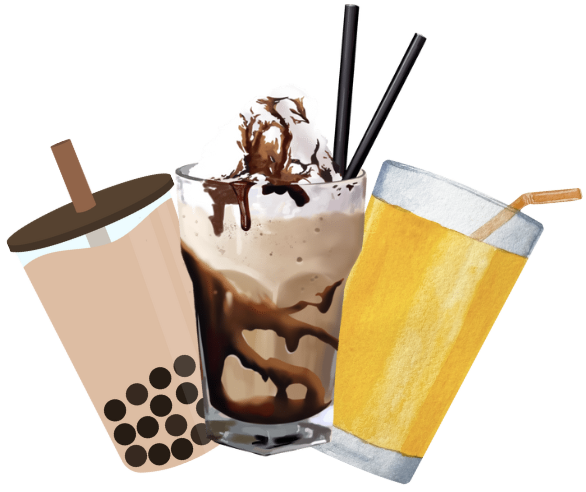
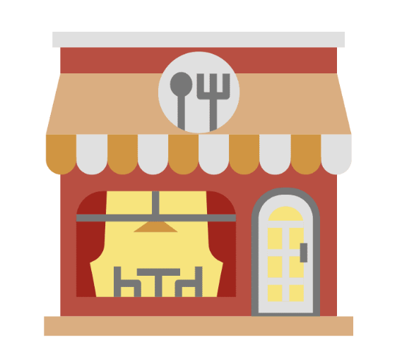

Drinks
The Castle Hill region has numerous drink shops, primarily located in and around Castle towers. Teens who enjoy drinking
smoothies and juices can purchase a drink from boost or top juice. Bubble tea enjoyers can visit Chatime in Castle towers or take a
short trip to Castle mall, purchasing from Gong Cha or other drink franchises. These stores are all affordable for teens, with most
prices under $10. Furthermore, the food court has a Starbucks and Godiva for milkshakes and sweet drinks.

In the Castle Towers food court, teens can enjoy a diverse range of global cuisines. For those who love Asian food,
there's Taste of Shanghai for Chinese dishes, PappaRich for Malaysian favourites, and An Viet for authentic Vietnamese
food. Beyond that, they can grab classic American-style burgers from Betty's Burgers, or enjoy
Italian cusiuine at crinti's, providing plenty of options to suit any taste.
Fast Food
For teenagers who are looking for quick, cheap and tasty food, there are many fast food options at Castle towers.
Teens who enjoy eating fried chicken can purchase from KFC, Burgers and ice cream can be bought from Mcdonalds, healthy Mexican
fast food can be found at Guzman Y Gomez in the Plaza.